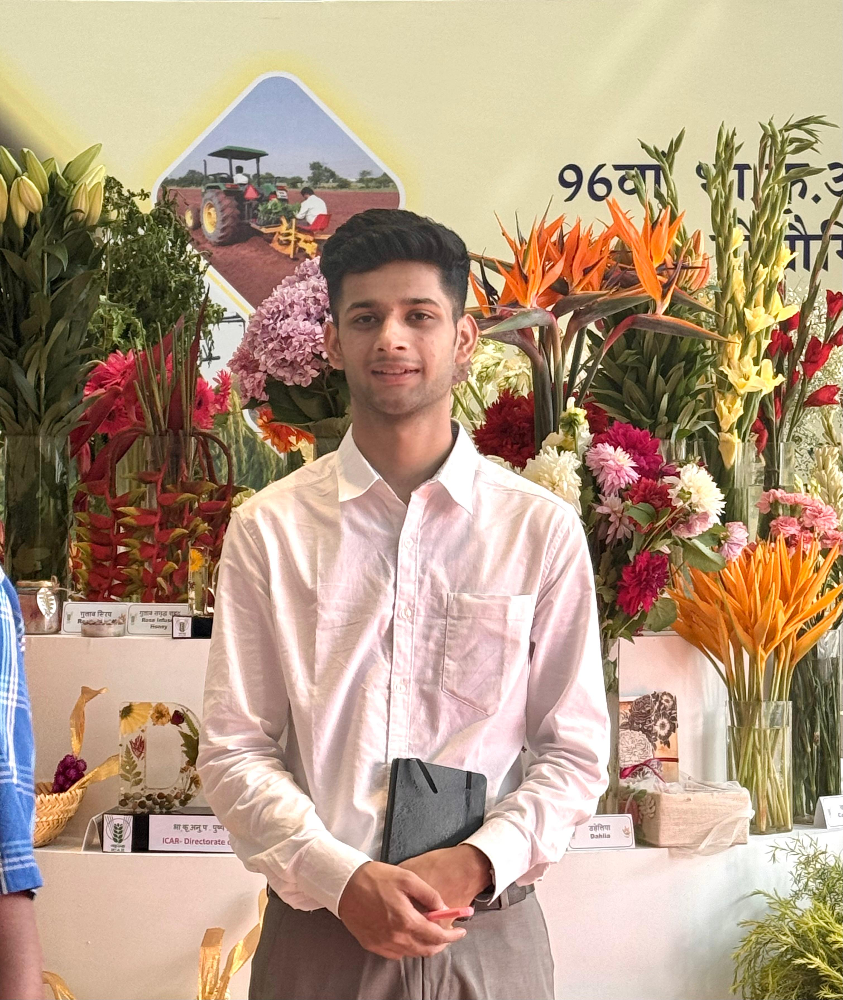
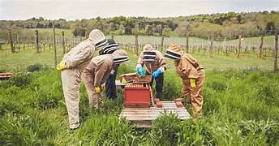
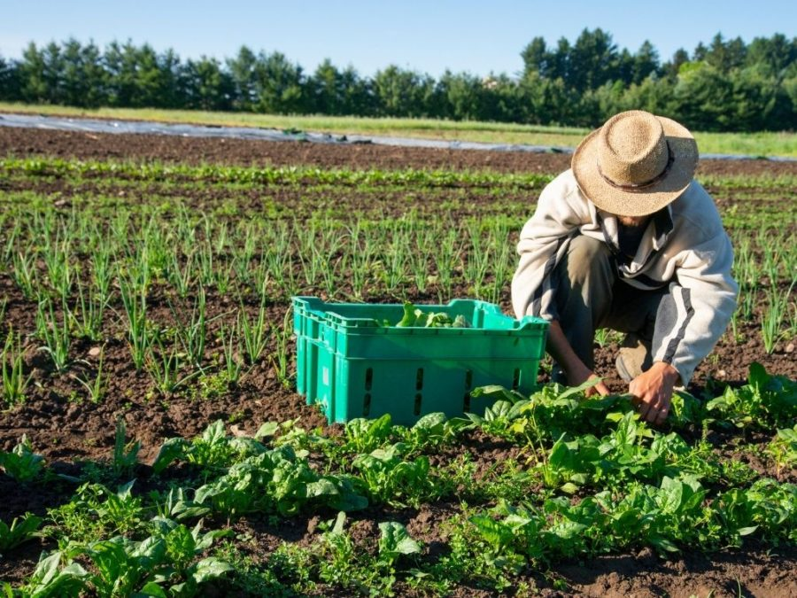

ABOUT ME
I'm Ankit Thakur, a graduate from CSKHPKV Palampur (HP). I am passionate about agriculture and have worked on projects like Natural Farming, Bee Keeping, and Organic Farming. Currently, I work at MERA FARMHOUSE as an Agriculture Expert, contributing my expertise to promote sustainable farming practices.
WORK EXPERIENCE
Currently working at MERA FARMHOUSE as an Agriculture Expert. Experienced in Natural Farming, Bee Keeping, and Organic Farming projects.

Project: Natural Farming
Brief: Promoting sustainable and eco-friendly farming techniques.
Brief: Promoting sustainable and eco-friendly farming techniques.

Project: Bee Keeping
Brief: Enhancing pollination and honey production through beekeeping projects.
Brief: Enhancing pollination and honey production through beekeeping projects.

Project: Organic Farming
Brief: Implementing organic practices to improve soil health and crop quality.
Brief: Implementing organic practices to improve soil health and crop quality.